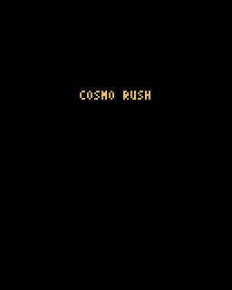
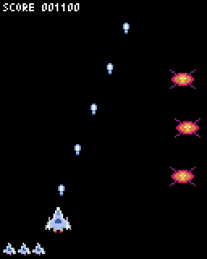
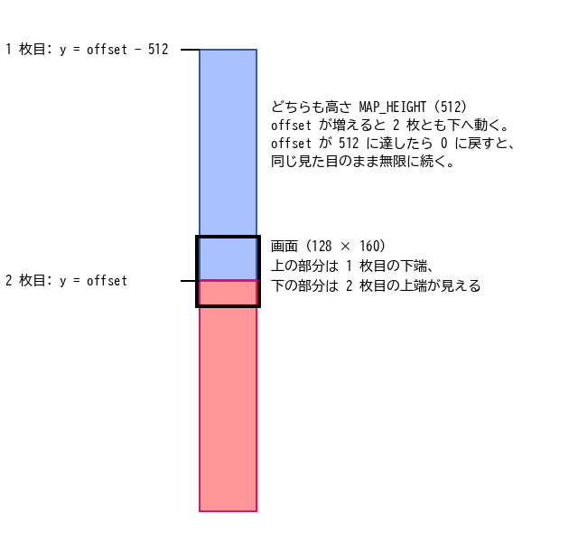
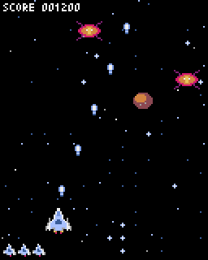
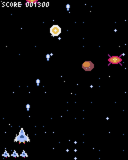
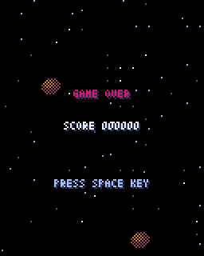

7. ゲームの実装（2）作り込み
第 6 章のプロトタイプに、シーン、素材、背景、音、演出を順に加え、最後に敵の種類とボスを加えて題材ゲームを完成させる。表 7.1 がこの章のステップである。
ステップ |
内容 |
サンプルコード |
|---|---|---|
ステップ 5 |
シーン（タイトル、プレイ、ゲームオーバー）を分ける。 |
|
ステップ 6 |
図形をスプライトに置き換える。 |
|
ステップ 7 |
タイルマップの背景をスクロールさせる。 |
|
ステップ 8 |
効果音と BGM を鳴らす。 |
|
ステップ 9 |
爆発や画面の揺れなどの演出を加える。 |
|
完成版 |
敵の種類、ボス、ステージの進行、ハイスコアの保存を加える。 |
|
ステップ 6 ～ 9 は、第 4 章、第 5 章で作ったリソースファイル examples/assets/cosmo_rush.pyxres を読み込む。完成版は、公開に備えて同じ内容のコピー examples/cosmo_rush/cosmo_rush.pyxres を読み込む（第 9 章）。
7.1. ステップ 5：シーンを分ける
7.1.1. シーンという考え方
タイトル画面とプレイ画面では、受け付ける入力も描く内容もまったく違う。これらを 1 つの App に書き、if 文で今どの画面かを調べて処理を分けると、画面が増えるたびにコードが読みにくくなる。そこで、画面ごとにクラスを分ける。この画面のまとまりをシーンと呼ぶ。
各シーンは update() と draw() を持ち、update() は次のフレームで使うシーンを返す（リスト 7.1）。シーンを切り替えないときは自分自身（self）を、切り替えるときは新しいシーンを返す。
133class Scene:
134 """シーン (画面) の基底クラス。update() は次のシーンを返す。"""
135
136 def update(self) -> "Scene":
137 return self
138
139 def draw(self) -> None:
140 pass
141
142
143class TitleScene(Scene):
144 def update(self) -> Scene:
145 if triggered(KEYS_START):
146 return PlayScene()
147 return self
148
149 def draw(self) -> None:
150 pyxel.cls(0)
151 draw_text_center(50, "COSMO RUSH", 10)
152 if pyxel.frame_count % 30 < 20:
153 draw_text_center(104, "PRESS SPACE KEY", 7)
App は、現在のシーンを 1 つ持ち、update() の戻り値で入れ替えるだけになる（リスト 7.2）。
243class App:
244 def __init__(self) -> None:
245 self.scene: Scene = TitleScene()
246
247 def update(self) -> None:
248 self.scene = self.scene.update()
249
250 def draw(self) -> None:
251 self.scene.draw()
この仕組みは、第 2 章の画面遷移図（図 2.2）をそのままコードにしたものである。TitleScene はキーが押されたら PlayScene を返し（146 行目）、PlayScene は残機が 0 になってから 60 フレーム後に GameOverScene を返し、GameOverScene はキーが押されたら TitleScene を返す。新しいシーンを作るたびに状態が初期化されるので、第 6 章の reset() は不要になった。
7.1.2. プレイ画面とゲームオーバー画面
PlayScene の中身は、第 6 章の App とほぼ同じである。違いは 2 つある。1 つ目は、敵の出現のタイミングを pyxel.frame_count ではなく、シーンが始まってからのフレーム数 self.frame で数えることである。こうしておくと、何度プレイしても同じタイミングで敵が出始める。2 つ目は、残機が 0 になってもすぐには切り替えず、少し待ってからゲームオーバー画面に移ることである（リスト 7.3）。やられた瞬間に画面が切り替わると、プレイヤーは何が起きたのか分からない。
168 def update(self) -> Scene:
169 self.frame += 1
170 if self.lives > 0:
171 self.player_bullets += self.player.update()
172 if self.frame % SPAWN_INTERVAL == 0:
173 self.enemies.append(Enemy(pyxel.rndi(0, SCREEN_W - 16), -16))
174 for enemy in self.enemies:
175 enemy.update()
176 for bullet in self.player_bullets:
177 bullet.update()
178
179 self.check_collisions()
180
181 self.player_bullets = [b for b in self.player_bullets if b.alive]
182 self.enemies = [e for e in self.enemies if e.alive]
183
184 # 残機がなくなったら、少し待ってからゲームオーバー画面に移る
185 if self.lives == 0:
186 self.game_over_timer += 1
187 if self.game_over_timer >= GAME_OVER_DELAY:
188 return GameOverScene(self.score)
189 return self
GameOverScene も、表示してから 60 フレームの間はキーを受け付けない（リスト 7.4）。ショットのキーを連打している最中にやられると、ゲームオーバー画面を読む前にタイトル画面へ進んでしまうからである。
221class GameOverScene(Scene):
222 WAIT_FRAMES = 60
223
224 def __init__(self, score: int) -> None:
225 self.score = score
226 self.timer = 0
227
228 def update(self) -> Scene:
229 self.timer += 1
230 # 直前の操作で誤って先へ進まないよう、しばらくは入力を受け付けない
231 if self.timer >= self.WAIT_FRAMES and triggered(KEYS_START):
232 return TitleScene()
233 return self
234
235 def draw(self) -> None:
236 pyxel.cls(0)
237 draw_text_center(56, "GAME OVER", 8)
238 draw_text_center(76, f"SCORE {self.score:06}", 7)
239 if self.timer >= self.WAIT_FRAMES:
240 draw_text_center(112, "PRESS SPACE KEY", 6)

図 7.1 ステップ 5 のタイトル画面
7.2. ステップ 6：スプライトで描く
7.2.1. リソースファイルを読み込む
図形を、第 4 章で描いた絵に置き換える。まず main() で、初期化の直後にリソースファイルを読み込む（リスト 7.5）。
266def main() -> None:
267 pyxel.init(SCREEN_W, SCREEN_H, title="COSMO RUSH - step6")
268 pyxel.load(RESOURCE_FILE)
269 app = App()
270 pyxel.run(app.update, app.draw)
RESOURCE_FILE は "../assets/cosmo_rush.pyxres" である。相対パスは main.py のあるディレクトリから探されるので、ch07_step6 の 1 つ上にある assets ディレクトリのファイルを読み込む。
7.2.2. pyxel.blt で絵を描く
イメージバンクの絵を画面に描くには pyxel.blt() を使う。
1pyxel.blt(x, y, img, u, v, w, h, colkey)
画面の (x, y) の位置に、イメージバンク img の (u, v) から幅 w、高さ h の範囲の絵を描く。colkey には透明色を指定する。colkey を省略すると透明色を使わず、四角形の範囲がすべて描かれる。w や h を負の値にすると、絵が左右や上下に反転する。
自機の弾は、イメージバンク 0 の (48, 0) にある 8 × 8 ピクセルの絵である（リスト 7.6）。
79 def draw(self) -> None:
80 # イメージバンク 0 の (48, 0) から 8x8 を、黒 (0) を透明色として描く
81 pyxel.blt(self.x, self.y, 0, 48, 0, 8, 8, 0)
7.2.3. アニメーション
自機と敵は 2 コマのアニメーションを持つ。コマを横に並べて置いたので、何コマ目を描くかを pyxel.frame_count から計算し、u 座標をずらすだけでよい（リスト 7.7）。
112 def draw(self) -> None:
113 if self.invincible > 0 and pyxel.frame_count % 4 < 2:
114 return
115 # 2 フレームごとに (16, 0) と (32, 0) の絵を切り替えて、噴射の炎を揺らす
116 u = 16 + pyxel.frame_count // 2 % 2 * 16
117 pyxel.blt(self.x, self.y, 0, u, 0, 16, 16, 0)
118
119
120class Enemy(Entity):
121 """まっすぐ下へ進む敵。"""
122
123 U = 0
124 V = 16
125 SCORE = 100
126
127 def __init__(self, x: float, y: float) -> None:
128 super().__init__(x, y, 16, 16, margin=2)
129
130 def update(self) -> None:
131 self.y += 1.5
132 if self.y > SCREEN_H:
133 self.alive = False
134
135 def draw(self) -> None:
136 # 8 フレームごとに 2 コマの絵を切り替える
137 u = self.U + pyxel.frame_count // 8 % 2 * self.w
138 pyxel.blt(self.x, self.y, 0, u, self.V, self.w, self.h, 0)
116 行目の pyxel.frame_count // 2 % 2 は、2 フレームごとに 0 と 1 を交互にとる。これに 16 を掛けて足すと、u 座標は 16 と 32 を交互にとる。137 行目の敵は 8 フレームごとに切り替えている。自機の噴射の炎は速く、敵の脚はゆっくり動かすことで、それぞれの印象に合った動きにしている。
Enemy に定数 U と V を持たせたのは、完成版で敵の種類を増やすときに、絵の位置だけを変えた子クラスを作れるようにするためである。
7.2.4. タイトルロゴと残機の表示
タイトルロゴはイメージバンク 1 に置いてある。pyxel.blt() の img に 1 を指定して描く。残機は自機の絵を並べて表す。pyxel.blt() の引数 scale に 0.5 を指定すると、絵が半分の大きさで描かれる（リスト 7.8）。
219 def draw(self) -> None:
220 pyxel.cls(0)
221 for enemy in self.enemies:
222 enemy.draw()
223 for bullet in self.player_bullets:
224 bullet.draw()
225 if self.lives > 0:
226 self.player.draw()
227 pyxel.text(2, 2, f"SCORE {self.score:06}", 7)
228 # 残機は自機の絵を半分の大きさで並べて表す
229 for i in range(self.lives):
230 pyxel.blt(i * 9 - 2, SCREEN_H - 14, 0, 16, 0, 16, 16, 0, scale=0.5)
scale を指定した場合、拡大や縮小は描く範囲の中心を基準に行われる。16 × 16 の範囲を 0.5 倍すると、指定した (x, y) から 4 ピクセル内側に 8 × 8 の絵が描かれる。230 行目で x と y から少し引いているのは、このずれを打ち消すためである。

図 7.2 ステップ 6 の実行結果
7.3. ステップ 7：背景をスクロールさせる
7.3.1. タイルマップを描く
タイルマップを画面に描くには pyxel.bltm() を使う。
1pyxel.bltm(x, y, tm, u, v, w, h, colkey)
画面の (x, y) の位置に、タイルマップ tm の (u, v) から幅 w、高さ h の範囲を描く。u、v、w、h はタイルの数ではなくピクセル単位で指定する。
7.3.2. ループするスクロール
縦スクロールのシューティングでは、自機は画面の中にとどまり、背景が上から下へ流れることで前進しているように見せる。題材ゲームの背景は、高さ 512 ピクセルのタイルマップである。これを下へずらしながら描き、端まで来たら最初に戻す。ただし単純に戻すと、継ぎ目で背景が途切れてしまう。
そこで、同じタイルマップを縦に 2 枚並べて描く（図 7.3）。ずらす量 offset が 0 から 512 まで増える間、2 枚の地図は一緒に下へ動く。offset が 512 になったとき、1 枚目はちょうど 2 枚目が最初にあった位置（y = 0）に来ている。そこで offset を 0 に戻しても、画面の見た目は変わらない。こうして、同じ地図が途切れなく繰り返される。

図 7.3 2 枚のタイルマップを並べたループスクロール（縮尺は 1/2）
背景の処理は Background クラスにまとめた（リスト 7.9）。
141class Background:
142 """タイルマップをループさせて縦スクロールする背景。"""
143
144 MAP_HEIGHT = 512
145 SPEED = 0.5
146
147 def __init__(self) -> None:
148 self.offset = 0.0
149 # 手前を速く流れる星 (x, y, 速さ) で奥行きを出す
150 self.stars = [(pyxel.rndf(0, SCREEN_W), pyxel.rndf(0, SCREEN_H), pyxel.rndf(1.5, 3)) for _ in range(12)]
151
152 def update(self) -> None:
153 self.offset = (self.offset + self.SPEED) % self.MAP_HEIGHT
154 self.stars = [(x, (y + speed) % SCREEN_H, speed) for x, y, speed in self.stars]
155
156 def draw(self) -> None:
157 pyxel.cls(0)
158 # 同じタイルマップを縦に 2 枚並べて描き、継ぎ目なくループさせる
159 y = int(self.offset) - self.MAP_HEIGHT
160 pyxel.bltm(0, y, 0, 0, 0, SCREEN_W, self.MAP_HEIGHT)
161 pyxel.bltm(0, y + self.MAP_HEIGHT, 0, 0, 0, SCREEN_W, self.MAP_HEIGHT)
162 for x, y_star, speed in self.stars:
163 pyxel.pset(x, y_star, 7 if speed > 2.5 else 13)
153 行目で offset を 0.5 ずつ増やし、512 で割った余りをとることで 0 に戻している。159 ～ 161 行目が 2 枚のタイルマップを描く処理である。画面からはみ出す部分は自動的に描かれないので、2 枚ともそのまま描けばよい。
7.3.3. 奥行きを出す
背景のタイルマップに加えて、速く流れる星を 12 個だけ点で描いている（150 行目、154 行目、162 ～ 163 行目）。遠くのもの（タイルマップ）はゆっくり、近くのもの（点の星）は速く動かすと、画面に奥行きが感じられる。この手法を多重スクロールと呼ぶ。
Background のインスタンスはシーンをまたいで引き継ぐ。シーンが変わるたびに作り直すと、背景のスクロール位置が先頭に戻ってしまうからである。そのため、各シーンのコンストラクタは Background を引数で受け取るように変えた。

図 7.4 ステップ 7 の実行結果
7.4. ステップ 8：効果音と BGM を鳴らす
第 5 章で作ったサウンドを鳴らす。サウンドとミュージックの番号は、意味の分かる名前の定数にしておく（リスト 7.10）。番号を直接書くと、後で番号を変えたときに直し漏れが起きやすい。
11# サウンド番号 (効果音はチャンネル 3 で鳴らす)
12SE_CHANNEL = 3
13SE_SHOT = 0
14SE_EXPLOSION = 1
15SE_PLAYER_HIT = 2
16SE_START = 3
17SE_GAME_OVER = 5
18MUSIC_TITLE = 0
19MUSIC_STAGE = 1
効果音は、それぞれの出来事が起きた場所で鳴らす。弾を撃ったときは Player.update() で、敵を倒したときと自機がやられたときは PlayScene.check_collisions() で鳴らす（リスト 7.11）。
247 def check_collisions(self) -> None:
248 for bullet in self.player_bullets:
249 for enemy in self.enemies:
250 if enemy.alive and overlaps(bullet, enemy):
251 bullet.alive = False
252 enemy.alive = False
253 self.score += Enemy.SCORE
254 pyxel.play(SE_CHANNEL, SE_EXPLOSION)
255 break
256
257 if self.lives == 0 or self.player.invincible > 0:
258 return
259 for enemy in self.enemies:
260 if overlaps(self.player, enemy):
261 enemy.alive = False
262 self.lives -= 1
263 self.player.invincible = Player.INVINCIBLE_FRAMES
264 if self.lives == 0:
265 pyxel.stop()
266 pyxel.play(SE_CHANNEL, SE_PLAYER_HIT)
267 return
BGM は、シーンが始まるときに pyxel.playm() でループ再生する（リスト 7.12）。タイトル画面からプレイ画面に移るときは、pyxel.stop() でタイトル画面の BGM を止めてから決定音を鳴らす。最後の残機がなくなったときも BGM を止め（264 ～ 265 行目）、やられた音だけを聞かせる。ゲームオーバー画面に移るときは、すべての音を止めてから、空いたチャンネル 0 でゲームオーバーの音を鳴らす。
187class TitleScene(Scene):
188 def __init__(self, background: Background) -> None:
189 self.background = background
190 pyxel.playm(MUSIC_TITLE, loop=True)
191
192 def update(self) -> Scene:
193 self.background.update()
194 if triggered(KEYS_START):
195 pyxel.stop()
196 pyxel.play(SE_CHANNEL, SE_START)
197 return PlayScene(self.background)
198 return self
7.5. ステップ 9：演出を加える
ゲームの中身は同じでも、演出を加えると手触りが大きく変わる。このステップでは、爆発、画面の揺れ、ゲームオーバー画面の暗転を加える。あわせて draw_text_center() を変え、色 1 で 1 ピクセルずらした文字を先に描いて影を付けた。背景の上でも文字が読みやすくなる。
7.5.1. 爆発
爆発は当たり判定を持たず、4 コマのアニメーションを再生したら消えるだけの物体である（リスト 7.13）。
153class Explosion:
154 FRAME_TIME = 3
155 NUM_FRAMES = 4
156
157 def __init__(self, cx: float, cy: float) -> None:
158 self.x = cx - 8
159 self.y = cy - 8
160 self.age = 0
161 self.alive = True
162
163 def update(self) -> None:
164 self.age += 1
165 if self.age >= self.FRAME_TIME * self.NUM_FRAMES:
166 self.alive = False
167
168 def draw(self) -> None:
169 # 3 フレームごとに次のコマへ進める
170 u = self.age // self.FRAME_TIME * 16
171 pyxel.blt(self.x, self.y, 0, u, 64, 16, 16, 0)
ステップ 6 のアニメーションは pyxel.frame_count からコマを決めていたが、爆発は生まれてからのフレーム数 age からコマを決める（170 行目）。いつ生まれた爆発も、必ず 1 コマ目から再生させるためである。PlayScene は、敵や自機がやられたときに、その中心の位置に Explosion を作る（283 行目、294 行目）。
7.5.2. 画面の揺れ
自機がやられたときに画面を揺らすと、衝撃の大きさが伝わる。pyxel.camera(x, y) を呼ぶと、それ以降の描画がすべて (-x, -y) だけずれる。揺れている間は、毎フレーム乱数で少しだけずらす（リスト 7.14）。
301 def draw(self) -> None:
302 # 画面の揺れはカメラの位置をずらして表現する
303 if self.shake > 0:
304 pyxel.camera(pyxel.rndi(-2, 2), pyxel.rndi(-2, 2))
305 self.background.draw()
306 for enemy in self.enemies:
307 enemy.draw()
308 for bullet in self.player_bullets:
309 bullet.draw()
310 if self.lives > 0:
311 self.player.draw()
312 for explosion in self.explosions:
313 explosion.draw()
314 # スコアなどの表示は揺らさないよう、カメラを元に戻してから描く
315 pyxel.camera()
316 pyxel.text(2, 2, f"SCORE {self.score:06}", 7)
317 # 残機は自機の絵を半分の大きさで並べて表す
318 for i in range(self.lives):
319 pyxel.blt(i * 9 - 2, SCREEN_H - 14, 0, 16, 0, 16, 16, 0, scale=0.5)
315 行目で pyxel.camera() を引数なしで呼び、ずれを元に戻してからスコアと残機を描いている。スコアの表示まで揺れると読みにくいからである。
7.5.3. ディザリングによる暗転
ゲームオーバー画面では、背景を半分だけ暗くして文字を読みやすくする（リスト 7.15）。Pyxel には半透明の描画がないが、pyxel.dither(alpha) を使うと、点を間引いて描くことで半透明に近い表現ができる。この手法をディザリングと呼ぶ。alpha は 0.0（何も描かない）～ 1.0（すべて描く）で指定する。
340 def draw(self) -> None:
341 self.background.draw()
342 # ディザリングで背景を半分だけ暗くする
343 pyxel.dither(0.5)
344 pyxel.rect(0, 0, SCREEN_W, SCREEN_H, 0)
345 pyxel.dither(1.0)
346 draw_text_center(56, "GAME OVER", 8)
347 draw_text_center(76, f"SCORE {self.score:06}", 7)
348 if self.timer >= self.WAIT_FRAMES:
349 draw_text_center(112, "PRESS SPACE KEY", 6)
343 ～ 345 行目で、alpha を 0.5 にして画面全体に黒い四角形を描き、すぐに 1.0 に戻している。戻し忘れると、それ以降の描画もすべて間引かれてしまう。
 |
 |
爆発の演出 |
ディザリングで暗くしたゲームオーバー画面 |
7.6. 完成版：敵の種類とボス
最後に、敵の種類、敵の弾、ボス、ステージの進行、ハイスコアの保存を加えて完成させる。完成版のコードは cosmo_rush/main.py にある。全体は付録 C サンプルコードで読める。
7.6.1. 敵の種類を増やす
敵の種類ごとに違うのは、絵の位置、体力、得点、動き方、弾の撃ち方である。そこで Enemy を基底クラスにして、move() と shoot() を子クラスで上書きする（リスト 7.16）。
199class Enemy(Entity):
200 """敵の基底クラス。まっすぐ下へ進む (敵 A)。"""
201
202 U = 0
203 V = 16
204 HP = 1
205 SCORE = 100
206
207 def __init__(self, x: float, y: float, level: int) -> None:
208 super().__init__(x, y, 16, 16, margin=2)
209 self.level = level
210 self.hp = self.HP
211 self.age = 0
212 self.flash = 0
213
214 def update(self, player: Player) -> list[EnemyBullet]:
215 """1 フレーム分動き、新しく撃った弾のリストを返す。"""
216 self.age += 1
217 if self.flash > 0:
218 self.flash -= 1
219 self.move()
220 if self.y > SCREEN_H:
221 self.alive = False
222 return self.shoot(player)
223
224 def move(self) -> None:
225 self.y += 1.5 + 0.2 * self.level
226
227 def shoot(self, player: Player) -> list[EnemyBullet]:
228 return []
229
230 def damage(self) -> bool:
231 """弾が当たったときの処理。倒したら True を返す。"""
232 self.hp -= 1
233 self.flash = 3
234 if self.hp <= 0:
235 self.alive = False
236 return True
237 return False
238
239 def draw(self) -> None:
240 u = self.U + pyxel.frame_count // 8 % 2 * self.w
241 if self.flash > 0:
242 # 被弾した直後は全色を白に置き換えて光らせる
243 for col in range(1, 16):
244 pyxel.pal(col, 7)
245 pyxel.blt(self.x, self.y, 0, u, self.V, self.w, self.h, 0)
246 pyxel.pal()
update() は、毎フレーム同じ順番で move() と shoot() を呼ぶ（214 ～ 222 行目）。この順番は変えず、中身だけを子クラスで変える。shoot() は、Player.update() と同じく、撃った弾をリストで返す。
damage() は弾が当たったときに呼ばれ、体力を 1 減らす（230 ～ 237 行目）。倒せなかったときも flash を設定し、3 フレームの間、絵を白く光らせる。243 ～ 244 行目の pyxel.pal(col1, col2) は、色 col1 を色 col2 に置き換えて描くように設定する関数である。色 1 ～ 15 をすべて白（7）に置き換えてから描き、246 行目の pyxel.pal() で元に戻す。体力のある敵に弾が当たったことが、一目で分かる。
敵 B は、pyxel.sin() で左右に揺れながら下へ進む（リスト 7.17）。pyxel.sin() の引数は、ラジアンではなく度で指定する。self.age * 6 は 60 フレームで 360 度になるので、2 秒で 1 往復する。
249class EnemyB(Enemy):
250 """左右に揺れながら下へ進む敵。"""
251
252 U = 32
253 HP = 2
254 SCORE = 200
255
256 def __init__(self, x: float, y: float, level: int) -> None:
257 super().__init__(x, y, level)
258 self.base_x = pyxel.clamp(x, 24, SCREEN_W - 40)
259
260 def move(self) -> None:
261 self.y += 1.0 + 0.1 * self.level
262 self.x = self.base_x + pyxel.sin(self.age * 6) * 24
敵 C は、途中で止まって自機を 2 回狙い撃ちし、その後に去っていく（リスト 7.18）。
265class EnemyC(Enemy):
266 """途中で止まって自機を狙い撃ちし、その後に去っていく敵。"""
267
268 U = 64
269 HP = 4
270 SCORE = 300
271 STOP_FRAMES = 90
272
273 def __init__(self, x: float, y: float, level: int) -> None:
274 super().__init__(x, y, level)
275 self.stop_y = pyxel.rndi(24, 64)
276 self.stop_timer = 0
277
278 def move(self) -> None:
279 if self.y < self.stop_y:
280 self.y += 2
281 elif self.stop_timer < self.STOP_FRAMES:
282 self.stop_timer += 1
283 else:
284 self.y += 3
285
286 def shoot(self, player: Player) -> list[EnemyBullet]:
287 if self.stop_timer in (20, 60):
288 return [aimed_bullet(self, player, 1.5 + 0.2 * self.level)]
289 return []
7.6.2. 自機を狙う弾
自機を狙う弾は、リスト 7.19 の aimed_bullet() で作る。
154def aimed_bullet(src: Entity, target: Entity, speed: float) -> EnemyBullet:
155 """src の中心から target の中心へ向かう弾を作る。"""
156 sx, sy = src.center()
157 tx, ty = target.center()
158 angle = pyxel.atan2(ty - sy, tx - sx)
159 return EnemyBullet(sx, sy, pyxel.cos(angle) * speed, pyxel.sin(angle) * speed)
pyxel.atan2(dy, dx) は、(dx, dy) の向きの角度を度で返す。この角度の向きに速さ speed で進むには、x 方向の速度を cos(角度) * speed、y 方向の速度を sin(角度) * speed にすればよい。弾は撃たれた瞬間の自機の位置へ向かってまっすぐ飛ぶので、撃たれてから動けば避けられる。
7.6.3. ボス
ボスも Enemy の子クラスである（リスト 7.20）。絵の大きさを 32 × 32 にし、体力と移動と攻撃を変えている。
292class Boss(Enemy):
293 """ステージの最後に現れる大型の敵。"""
294
295 U = 0
296 V = 32
297 SCORE = 5000
298
299 def __init__(self, level: int) -> None:
300 super().__init__(SCREEN_W / 2 - 16, -32, level)
301 self.w = 32
302 self.h = 32
303 self.margin = 4
304 self.hp = self.max_hp = 50 + 20 * level
305 self.angle = 0.0
306
307 def move(self) -> None:
308 if self.y < 16:
309 self.y += 0.5
310 return
311 # 角度を少しずつ進めて左右に往復する。体力が半分を切ったら進め方を 2 倍にする
312 self.angle += 2 if self.hp < self.max_hp / 2 else 1
313 self.x = SCREEN_W / 2 - 16 + pyxel.sin(self.angle) * 40
314
315 def shoot(self, player: Player) -> list[EnemyBullet]:
316 if self.y < 16:
317 return []
318 bullets: list[EnemyBullet] = []
319 cx, cy = self.center()
320 if self.age % 45 == 0:
321 # 扇状に 5 発
322 for i in range(5):
323 angle = 60 + i * 15
324 bullets.append(EnemyBullet(cx, cy + 8, pyxel.cos(angle) * 1.5, pyxel.sin(angle) * 1.5))
325 if self.hp < self.max_hp / 2 and self.age % 45 in (20, 26, 32):
326 # 体力が半分を切ったら狙い撃ちを追加する
327 bullets.append(aimed_bullet(self, player, 2.5))
328 return bullets
329
330 def draw(self) -> None:
331 super().draw()
332 # 体力ゲージ
333 pyxel.rect(4, 12, (SCREEN_W - 8) * self.hp / self.max_hp, 2, 8)
登場するときは画面の上からゆっくり降りてきて、y = 16 で止まる（308 ～ 310 行目）。降りてくる間は弾を撃たない。
その後は左右に往復する。体力が半分を切ると、往復の速さが 2 倍になる（311 ～ 313 行目）。位置は毎フレーム少しずつ進める角度
angleから決めているので、速さが変わっても位置は飛ばない。45 フレームごとに、下向き（90 度）を中心に 60 ～ 120 度の範囲へ 5 発の弾を扇状に撃つ（320 ～ 324 行目）。体力が半分を切ると、自機を狙う弾を 3 連射で追加する（325 ～ 327 行目）。
333 行目で、画面の上部に体力ゲージを描く。
戦いの途中で攻撃が激しくなると、プレイヤーは「あと少しだ」と感じて盛り上がる。体力に応じて行動を変えるのは、ボスを印象的にする定番の方法である。
7.6.4. ステージの進行
PlayScene は、ステージ開始からのフレーム数 frame で敵の出現とボスの登場を管理する（リスト 7.21）。
476 def spawn_enemies(self) -> None:
477 """経過時間に応じて敵を出現させる。"""
478 if self.frame >= BOSS_FRAME - WARNING_FRAMES:
479 return
480 interval = max(10, 30 - self.level * 5)
481 if self.frame % interval != 0:
482 return
483 sec = self.frame // FPS
484 kinds: list[type[Enemy]] = [Enemy]
485 if sec >= 10:
486 kinds.append(EnemyB)
487 if sec >= 20:
488 kinds.append(EnemyC)
489 kind = kinds[pyxel.rndi(0, len(kinds) - 1)]
490 self.enemies.append(kind(pyxel.rndi(0, SCREEN_W - 16), -16, self.level))
491
492 def update_stage(self) -> None:
493 """警告、ボスの出現、ステージクリアを管理する。"""
494 if self.frame == BOSS_FRAME - WARNING_FRAMES:
495 pyxel.play(SE_CHANNEL, SE_WARNING)
496 if self.frame == BOSS_FRAME:
497 self.boss = Boss(self.level)
498 self.enemies.append(self.boss)
499 if self.boss is not None and not self.boss.alive:
500 self.boss = None
501 self.clear_timer = CLEAR_FRAMES
502 if self.clear_timer > 0:
503 self.clear_timer -= 1
504 if self.clear_timer == 0:
505 self.level += 1
506 self.frame = 0
507
spawn_enemies()は、最初の 10 秒は敵 A だけを、10 秒を過ぎると敵 B も、20 秒を過ぎると敵 C も出す（484 ～ 490 行目）。ボスの警告が始まったら、雑魚敵は出さない（478 ～ 479 行目）。484 行目の
list[type[Enemy]]は「Enemyまたはその子クラスそのもの」のリストを表す型である。クラスをリストに入れ、選んだクラスを呼び出して敵を作る（490 行目）。update_stage()は、ボスが現れる 2 秒前に警告音を鳴らし（494 ～ 495 行目）、45 秒でボスを出す（496 ～ 498 行目）。ボスが倒されたら 4 秒後にlevelを 1 増やし、frameを 0 に戻して次のステージを始める（499 ～ 506 行目）。levelは敵の速さ、敵の出現間隔、ボスの体力などに反映される。ステージを重ねるほど難しくなる。
ボスを倒したときは、時間差で 12 個の爆発を起こし、画面に残った敵の弾を消し、画面を大きく揺らす（リスト 7.22）。Explosion に delay を加え、指定したフレーム数だけ待ってから再生を始めるようにした。
530 def hit_enemy(self, enemy: Enemy) -> None:
531 if not enemy.damage():
532 pyxel.play(SE_CHANNEL, SE_DAMAGE)
533 return
534 self.add_score(enemy.SCORE)
535 cx, cy = enemy.center()
536 pyxel.play(SE_CHANNEL, SE_EXPLOSION)
537 if isinstance(enemy, Boss):
538 # ボスは時間差で何度も爆発させ、画面に残った弾を消す
539 for i in range(12):
540 self.explosions.append(Explosion(cx + pyxel.rndi(-16, 16), cy + pyxel.rndi(-16, 16), delay=i * 4))
541 self.enemy_bullets.clear()
542 self.shake = 30
543 else:
544 self.explosions.append(Explosion(cx, cy))
7.6.5. ハイスコアの保存
ハイスコアは、ゲームを終了しても残るようにファイルに保存する（リスト 7.23）。保存先には pyxel.user_data_dir(vendor_name, app_name) が返すディレクトリを使う。この関数は、OS ごとに適切なユーザー用のデータディレクトリを返し、なければ作成する。
71def load_high_score() -> int:
72 """保存されたハイスコアを読み込む。読めなければ 0 を返す。"""
73 try:
74 path = Path(pyxel.user_data_dir(VENDOR_NAME, APP_NAME)) / "high_score.json"
75 data = json.loads(path.read_text(encoding="utf-8"))
76 return int(data["high_score"])
77 except (OSError, ValueError, KeyError, TypeError):
78 return 0
79
80
81def save_high_score(score: int) -> None:
82 """ハイスコアを保存する。保存に失敗してもゲームは続ける。"""
83 try:
84 path = Path(pyxel.user_data_dir(VENDOR_NAME, APP_NAME)) / "high_score.json"
85 path.write_text(json.dumps({"high_score": score}), encoding="utf-8")
86 except OSError:
87 pass
ファイルが壊れていたり、まだ保存されていなかったりしても、ゲームは止まってはいけない。そのため、読み込みに失敗したら 0 を返し（77 ～ 78 行目）、保存に失敗しても無視する（86 ～ 87 行目）。GameOverScene は、スコアがそれまでのハイスコアを超えていたら保存し、「NEW RECORD!」と表示する。
これで題材ゲームが完成した。examples ディレクトリで実行して遊んでみよう。
1> pyxel run cosmo_rush/main.py
7.6.6. 完成版のクラス図
完成版のクラスの関係を図 7.5 に示す。
![digraph classes {
node [shape=record, fontsize=10, style=filled, fillcolor="#eef3ff"];
edge [fontsize=9];
Entity [label="{Entity|x, y, w, h, margin, alive}"];
Player [label="{Player|update() → 弾のリスト}"];
PlayerBullet [label="{PlayerBullet}"];
EnemyBullet [label="{EnemyBullet|vx, vy}"];
Enemy [label="{Enemy (敵 A)|hp, level, flash|move()\lshoot() → 弾のリスト\ldamage()\l}"];
EnemyB [label="{EnemyB|move()}"];
EnemyC [label="{EnemyC|move()\lshoot()\l}"];
Boss [label="{Boss|move()\lshoot()\l}"];
Explosion [label="{Explosion|delay, age}", fillcolor="#f2f2f2"];
Background [label="{Background|offset, stars}", fillcolor="#f2f2f2"];
Scene [label="{Scene|update() → 次のシーン\ldraw()\l}", fillcolor="#fff4d6"];
TitleScene [fillcolor="#fff4d6"];
PlayScene [label="{PlayScene|score, lives, level, frame}", fillcolor="#fff4d6"];
GameOverScene [fillcolor="#fff4d6"];
App [label="{App|scene}", fillcolor="#fff4d6"];
Player -> Entity [arrowhead=empty];
PlayerBullet -> Entity [arrowhead=empty];
EnemyBullet -> Entity [arrowhead=empty];
Enemy -> Entity [arrowhead=empty];
EnemyB -> Enemy [arrowhead=empty];
EnemyC -> Enemy [arrowhead=empty];
Boss -> Enemy [arrowhead=empty];
TitleScene -> Scene [arrowhead=empty];
PlayScene -> Scene [arrowhead=empty];
GameOverScene -> Scene [arrowhead=empty];
App -> Scene [arrowtail=diamond, dir=back];
PlayScene -> Player [arrowtail=diamond, dir=back];
PlayScene -> Enemy [arrowtail=diamond, dir=back];
PlayScene -> PlayerBullet [arrowtail=diamond, dir=back];
PlayScene -> EnemyBullet [arrowtail=diamond, dir=back];
PlayScene -> Explosion [arrowtail=diamond, dir=back];
PlayScene -> Background [style=dashed, arrowhead=open, label="共有"];
}](_images/graphviz-0c912d499dbfa2f87ba12bf6209ae29775a9e902.png)
図 7.5 完成版のクラス図
7.7. まとめ
画面ごとにシーンのクラスを分け、
update()が次のシーンを返す仕組みで切り替える。pyxel.blt()でイメージバンクの絵を、pyxel.bltm()でタイルマップを描く。コマを並べて置いておけば、アニメーションは u 座標の計算だけで実現できる。同じタイルマップを 2 枚並べて描くと、背景を途切れなくスクロールできる。
効果音は出来事が起きた場所で鳴らし、BGM はシーンの開始時に鳴らす。
爆発、画面の揺れ、被弾時の点滅、ディザリングなどの演出で、ゲームの手触りが大きく良くなる。
敵の種類は、基底クラスの処理の流れを保ったまま、子クラスで動き方と攻撃だけを変えて増やす。